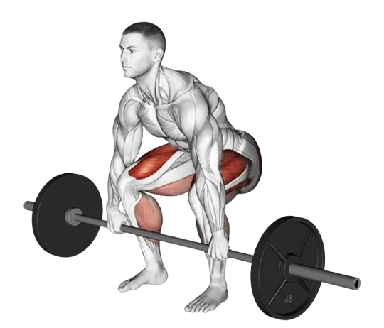

08
Legs
- Gluteus maximus: You’re probably familiar with this one. It’s the largest muscle in the upper leg, located at the back of the hip, in the glutes (your butt). One of the strongest muscles in the body, the gluteus maximus can generate a large amount of force. It controls motion at the pelvis and plays a role in maintaining posture. It’s one of the muscles you use to climb a flight of stairs or to go rock climbing, for example.
- Gluteus medius: Also located at the hip, just above the gluteus maximus, the gluteus medius helps with stability of the pelvis and hip abduction, which is the side movement of the leg away from the body. The gluteus medius prevents the opposite side of the pelvis from drooping during walking and running.
- Iliopsoas: This is a combined term for two of the largest hip flexor muscles, the psoas and the iliacus. Both are connected to the thigh bone, with the psoas originating at the low back and the iliacus on the inside of the pelvis. These muscles help with posture and engage every time we take a step forward. The iliopsoas is known for being a tight muscle from sedentary lifestyles.
- Rectus femoris, vastus lateralis, vastus medialis, and vastus intermedius: These four muscles make up what is commonly known as the quadriceps (quad equals four) and are located on the front of the leg. They attach to the patella (kneecap) and the tibia (shin) bones and work together to straighten the knee in activities such as kicking, jumping, squatting, and cycling.
- Semitendinosus, semimembranosus, and biceps femoris: The three muscles of the hamstrings, in the back of the leg, bend your knees and move your hips backward and are important for decelerating (slowing down) when running. Hamstrings are also particularly prone to strains and tendonitis.

- Tibialis anterior: Located on the outside of the shin bone, the tibialis anterior is the main muscle used to raise the front of your foot upward toward your shin. It also controls the lowering of your foot to the floor during walking. Paralysis or weakness in this muscle can lead to foot drop.
- Gastrocnemius and soleus: These calf muscles, on the back of the leg, both link into the Achilles tendon, the body’s strongest tendon, which can withstand a force up to 10 times your body weight. The gastrocnemius is a powerful calf muscle that works with the hamstrings to bend the knee and propel us forward when walking, running, and jumping. Located behind it is the soleus, which controls plantar flexing your foot, such as when pressing on the gas pedal while driving. The soleus is important for good posture to prevent us from falling forward.
- Posterior tibialis: Situated deep in the lower leg, the posterior tibialis is an important but often forgotten muscle that is key to stabilizing the arch of the foot. Posterior tibialis tendon dysfunction is a common cause of acquired flat foot deformity.
- Squats
- Bulgarian Split Squats
- Calf Raises
- Deadlift
3x6-8 (3 sets, 6-8 repitions)
The squat is a body resistance exercise that works the leg muscles. Specifically, the squat
targets the quadriceps and the hamstring muscles. Strengthening these muscles can help
protect your knees and boost your performance in a variety of sports.
In addition to targeting the legs, squats engage the glutes, core, and lower back muscles,
making them a highly effective compound movement for overall strength and stability.
Regularly performing squats can improve your balance, posture, and functional fitness, as
they mimic natural movements like sitting and standing. Whether you’re an athlete or simply
looking to enhance daily mobility, squats are a versatile exercise that can be adapted to
your fitness level and goals.

The squat is a body resistance exercise that works the leg muscles. Specifically, the squat targets the quadriceps and the hamstring muscles. Strengthening these muscles can help protect your knees and boost your performance in a variety of sports.
In addition to targeting the legs, squats engage the glutes, core, and lower back muscles, making them a highly effective compound movement for overall strength and stability. Regularly performing squats can improve your balance, posture, and functional fitness, as they mimic natural movements like sitting and standing. Whether you’re an athlete or simply looking to enhance daily mobility, squats are a versatile exercise that can be adapted to your fitness level and goals.
3x8-10 (3 sets, 8-10 repitions)
The Bulgarian split squat is a version of a single-leg squat where the back leg is
elevated on a bench or a sturdy chair. As a unilateral squat, the exercise focuses more
on the quadriceps than similar lower-body compound movements. It also requires a lot of
balance and coordination, increasing the core and upper body engagement required to
maintain proper form.
The Bulgarian split squat is a great movement to add to a lower-body strength or
total-body workout routine. Due to the compound, balance-focused nature of the movement,
it's a good idea to include it toward the beginning of a workout, perhaps after a solid
warmup including traditional squats, Romanian deadlifts, or barbell snatches.2 If you're
ready to fire up your quads and grow your glutes, read on for ways to try the
highly-effective exercise.

The Bulgarian split squat is a version of a single-leg squat where the back leg is elevated on a bench or a sturdy chair. As a unilateral squat, the exercise focuses more on the quadriceps than similar lower-body compound movements. It also requires a lot of balance and coordination, increasing the core and upper body engagement required to maintain proper form.
The Bulgarian split squat is a great movement to add to a lower-body strength or total-body workout routine. Due to the compound, balance-focused nature of the movement, it's a good idea to include it toward the beginning of a workout, perhaps after a solid warmup including traditional squats, Romanian deadlifts, or barbell snatches.2 If you're ready to fire up your quads and grow your glutes, read on for ways to try the highly-effective exercise.
3x8-10 (3 sets, 8-10 repitions)
A calf raise is a simple yet effective exercise that targets the muscles of the
lower leg, primarily the gastrocnemius and soleus. This movement involves lifting
your heels off the ground to stand on the balls of your feet, creating a contraction
in the calves. Calf raises can be performed with body weight, dumbbells, or a
barbell for added resistance, and they can be done on flat ground or a raised
platform for a deeper stretch.
Calf raises are particularly beneficial for hypertrophy, as they isolate the calf
muscles and allow for focused muscle activation. By using progressive
overload—gradually increasing weight or repetitions—you can effectively stimulate
growth in both the gastrocnemius and soleus. Performing variations such as seated or
standing calf raises targets different parts of the calf, promoting balanced muscle
development. Controlled movements and emphasizing the stretch at the bottom and
contraction at the top of each rep can further maximize hypertrophic gains, helping
you build strong, well-defined calves.

A calf raise is a simple yet effective exercise that targets the muscles of the lower leg, primarily the gastrocnemius and soleus. This movement involves lifting your heels off the ground to stand on the balls of your feet, creating a contraction in the calves. Calf raises can be performed with body weight, dumbbells, or a barbell for added resistance, and they can be done on flat ground or a raised platform for a deeper stretch.
Calf raises are particularly beneficial for hypertrophy, as they isolate the calf muscles and allow for focused muscle activation. By using progressive overload—gradually increasing weight or repetitions—you can effectively stimulate growth in both the gastrocnemius and soleus. Performing variations such as seated or standing calf raises targets different parts of the calf, promoting balanced muscle development. Controlled movements and emphasizing the stretch at the bottom and contraction at the top of each rep can further maximize hypertrophic gains, helping you build strong, well-defined calves.
3x6-8 (3 sets, 6-8 repitions)
The Deadlift is one of the most functional and basic exercises there is. The
goal of the exercise is to bend down, grab an object on the floor, and lift it
off the ground. Improvements in strength and speed can be attained from the
deadlift, which translate to an increase in overall power and athletic
performance.
In addition to enhancing strength, the deadlift engages multiple muscle groups,
including the glutes, hamstrings, lower back, and core, making it an efficient
full-body workout. It also helps improve posture and stability by reinforcing
proper body mechanics. Proper form is crucial to avoid injury and maximize
benefits, with a focus on maintaining a neutral spine, engaging the core, and
using controlled movements throughout the lift.

The Deadlift is one of the most functional and basic exercises there is. The goal of the exercise is to bend down, grab an object on the floor, and lift it off the ground. Improvements in strength and speed can be attained from the deadlift, which translate to an increase in overall power and athletic performance.
In addition to enhancing strength, the deadlift engages multiple muscle groups, including the glutes, hamstrings, lower back, and core, making it an efficient full-body workout. It also helps improve posture and stability by reinforcing proper body mechanics. Proper form is crucial to avoid injury and maximize benefits, with a focus on maintaining a neutral spine, engaging the core, and using controlled movements throughout the lift.